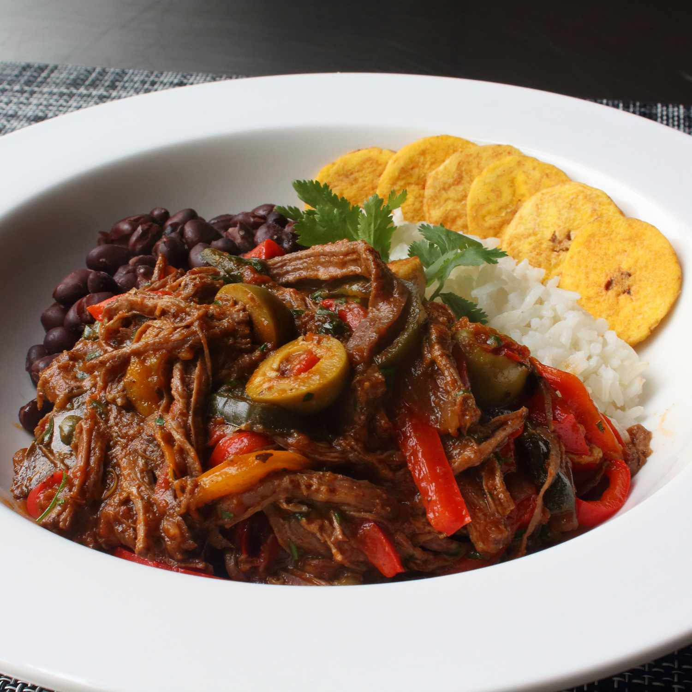

Ropa Vieja (Cuban Beef)

This Cuban braised beef dish literally translates to 'old clothes,' because apparently some people thought the fall-apart meat and colorful strips of onions and peppers, tangled together, looked like old, tattered clothing. You'll love this dish if you're into big, bold flavors, since there's nothing subtle about the seasoning here. Delicious served with beans, rice, and plantain chips. Garnish with more cilantro.
Ingredients
-
1 1/2 pound glank steak
-
2 teaspoons kosher salt, or more to taste
-
1 teaspoon freshly ground black pepper
-
1 pinch cayenne pepper
-
2 tablespoons olive oil
-
1 larged red onion
-
4 cloves garlic, slices
-
2 teaspoons ground cumin
-
2 teaspoons paprika
-
1 teaspoon dried oregano
-
1/4 teaspoon ground cloves
-
1/8 teaspoon ground allspice
-
1/2 cup white whine
-
1 1/2 cups tomato sauce
-
1 1/2 cups chicken broth
-
2 bay leaves
-
2 bell peppers, slices
-
1/2 tablespoon smoked paprika
-
2 tablespoons capers, drained
-
1 cup pimento-stuffed green olives, sliced
-
1 teaspoon white sugar, or to taste
-
1/3 cup chopped fresh cilantro